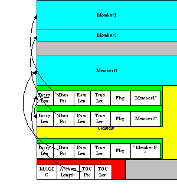

Sitemap
Getting StartedUtilities
Spec Files
When Things Go Wrong
Standalone Executables
Python Archives
Analyzing Python Modules
An Import Framework
Bug Tracker
Archives
You know what an archive is: a .tar file, a .jar file, a .zip file. Two kinds of archives are used here. One is equivalent to a Java .jar file - it allows Python modules to be stored efficiently and, (with some import hooks) imported directly. This is a ZlibArchive. The other (a CArchive) is equivalent to a .zip file - a general way of packing up (and optionally compressing) arbitrary blobs of data. It gets its name from the fact that it can be manipulated easily from C, as well as from Python. Both of these derive from a common base class, making it fairly easy to create new kinds of archives.
ZlibArchive
A ZlibArchive contains compressed .pyc (or .pyo) files. The Table of Contents is a marshalled dictionary, with the key (the module's name as given in an "import" statement) associated with a seek position and length. Because it is all marshaled Python, ZlibArchives are completely cross-platform.
A ZlibArchive hooks in with iu.py so that, with a little setup, the archived modules can be imported transparently. Even with compression at level 9, this works out to being faster than the normal import. Instead of searching sys.path, there's a lookup in the dictionary. There's no stat-ing of the .py and .pyc and no file opens (the file is already open). There's just a seek, a read and a decompress. A traceback will point to the source file the archive entry was created from (the __file__ attribute from the time the .pyc was compiled). On a user's box with no source installed, this is not terribly useful, but if they send you the traceback, at least you can make sense of it.

CArchive

A CArchive contains whatever you want to stuff into it. It's very much like a .zip file. They are easy to create in Python and unpack from C code. CArchives can be appended to other files (like ELF and COFF executables, for example). To allow this, they are opened from the end, so the TOC for a CArchive is at the back, followed only by a cookie that tells you where the TOC starts and where the archive itself starts.
CArchives can also be embedded within other CArchives. The inner archive can be opened in place (without extraction).
Each TOC entry is variable length. The first field in the entry tells you the length of the entry. The last field is the name of the corresponding packed file. The name is null terminated. Compression is optional by member.
There is also a type code associated with each entry. If you're using a CArchive as a .zip file, you don't need to worry about this. The type codes are used by the self-extracting executables.
McMillan Enterprises, Inc.